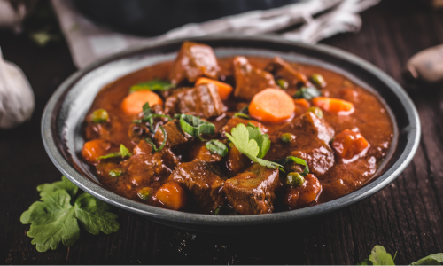

Bear Meat Stew
Ingredients
- 1 lb bear meat, cubed
- 2 potatoes, diced
- 3 carrots, sliced
- 2 celery stalks, chopped
- 1 onion, chopped
- 3 cloves garlic, minced
- 4 cups beef broth
- 1 can diced tomatoes
- 1 tsp thyme
- 2 bay leaves
- Salt and pepper to taste
Directions
- In a large pot, brown bear meat over medium heat.
- Add the chopped onion, garlic, celery, and carrots, and cook until softened.
- Stir in the potatoes, tomatoes, beef broth, thyme, bay leaves, salt, and pepper.
- Bring to a boil, then reduce heat and simmer for 1-2 hours until the meat is tender.
- Remove bay leaves before serving.